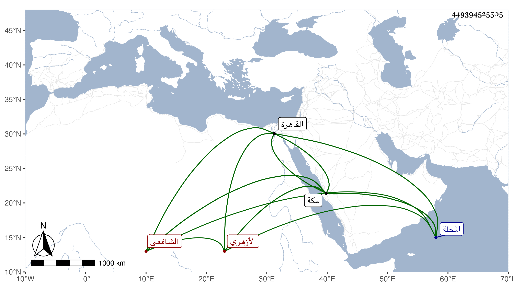

0902Sakhawi.DawLamic.ITO20230111-ara1.EIS1600.449394525505
Biography ID: 449394525505
1092
أيوب بن عبد السلام بن أيوب بن مخلوف الشبشيري من أعمال المحلة الأزهري الشافعي نزيل مكة ويعرف بالشيخ أيوب قدم القاهرة واشتغل يسيرا وتنزل في الجهات ثم مرض شديدا وأقام بالبيمارستان مدة فاشرف على الشفاء وكان على خلاف القياس ثم سافر إلى مكة حين توجه إلى العافية في سنة احدى وثمانين فقطنها على خير واستقامة وكتبت معه إلى القاضي فأكرمه وشمله بلحظه في جهات تيسرت له كمشيخة سبع حانربك ورباط ابن مزهر والتصوف بالأشرفية ودخل في بعض الوصايا فتعب وأتعب وحضر دروسه ودروس ولده وربما أقرأ ، وقدم القاهرة في سنة أربع وتسعين لشيء من ذلك فقضى أربه وحضر عند القاضي وغيره ثم عاد في موسم سنة خمس ثم سافر في موسم التي تليها ، وهو ممن اجتمع بي هناك وأخذ عني في الاصطلاح وغيره وصليت التراويح خلفه وظاهره لا بأس به ولكثيرين من أهل مكة فيه كلام .
